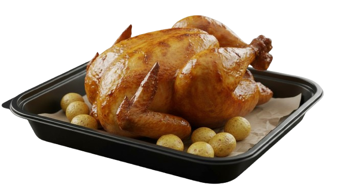
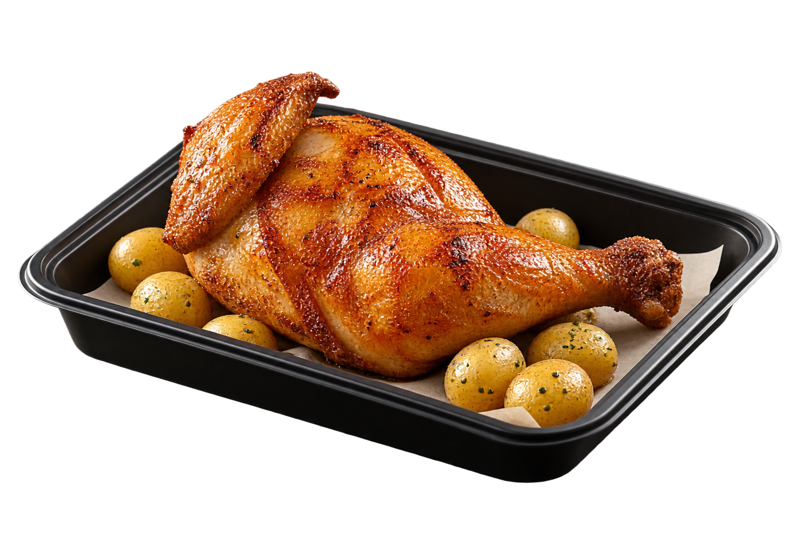

O que estamos analisando? Frango Assado do Consumo Local, Loja 47 — Catete · Códigos 9366 (inteiro) e 9521 (metade)
Esta página analisa os dois produtos de frango assado vendidos na Loja 47: Frango Assado Inteiro (9366) e Frango Assado Metade (9521). Fonte única de venda: a base consolidada CurvaABC_20260807115141.xlsx (pasta Venda Total) — 704 produtos, a mais completa entre as bases disponíveis.
Entenda
Entenda
Entenda
Entenda
Qualidade e confiabilidade dos dados desta análise
Quantidade, receita, preço médio, tonelagem, perda registrada e representação no faturamento — extraídos diretamente da base consolidada (Venda Total), sem soma manual de outras planilhas.
Janela de tempo do acumulado, custo oficial, peso físico real, escala exata da coluna Margem %, e preço atual de concorrentes — nenhum confirmado ainda.
O que os dados confirmam até aqui
| Item | Informado | Encontrado na base consolidada | Status |
|---|---|---|---|
| Preço de venda — Inteiro (9366) | R$ 39,00 | R$ 39,78 (médio) | divergência pequena ~2% |
| Peso do frango inteiro | 1,800 kg | 1,600 kg inferido (tonelagem ÷ quantidade) | divergência real |
| Custo por frango | R$ 22,00 | sem coluna de custo de compra na planilha | NÃO ENCONTRADO |
| Referência R$/kg insumo | R$ 12,00/kg | sem coluna de custo de compra na planilha | NÃO ENCONTRADO |
| Preço de venda — Metade (9521) | — | R$ 19,92 (médio) | CONFIRMADO |
| Valor de perda registrado (9366) | — | R$ 1.700,72 | CONFIRMADO |
| Valor de perda registrado (9521) | — | R$ 6,11 | CONFIRMADO |
Contexto externo resumido macro, não específico da loja
Brasil produziu 15,29 milhões de toneladas de frango em 2025, com projeção de 16,15 milhões (+5%) em 2026 (ABPA). Abate nacional cresceu 3,6% no 1º tri/2026 (IBGE). Cotação de mercado atacado: R$5,11-5,22/kg (CEPEA/ESALQ, jul-ago/2026). Nenhum desses números é preço ou custo específico da Fazenda das Antas ou da Loja 47 — servem só de pano de fundo setorial. Detalhes completos na aba Mercado Brasileiro.
Frango Assado Inteiro Código 9366 — "FRANGO ASSADO P/VIAGEM 1KG"

FRANGO ASSADO INTEIRO
Descrição na planilha: "FRANGO ASSADO P/VIAGEM 1KG" — rótulo "1KG" não interpretado como peso físico real, ver nota abaixo. Fonte: base consolidada Venda Total.
Entenda o preço médio
Entenda o peso
Entenda margem e representação
Todas as colunas da base — código 9366
| Código | 9366 |
|---|---|
| Descrição | FRANGO ASSADO P/VIAGEM 1KG |
| Categoria | CONSUMO LOCAL |
| Subcategoria | PRODUTOS DE SALAO |
| Segmento | GRELHADOS |
| Quantidade | 2.283,00 |
| Tonelagem | 3.652,80 |
| Valor R$ | R$ 90.816,97 |
| Preço médio (calculado) | R$ 39,78 |
| Reajuste Ajustado | R$ 16.804,26 |
| Margem % | 0,19 interpretação pendente |
| Valor Perda R$ | R$ 1.700,72 |
| R$ Médio do KG Vendido | R$ 24,86 |
| Representação Valor % | 1,53% validado matematicamente |
| Valor Verba R$ | R$ 0,00 |
| Margem Objetiva % | 50,00% |
Frango Assado Metade Código 9521 — "FRANGO ASSADO METADE P/VIAGEM 500G"

FRANGO ASSADO METADE
Descrição na planilha: "FRANGO ASSADO METADE P/VIAGEM 500G". Fonte: base consolidada Venda Total.
Peso médio inferido da planilha: 0,500 kg — bate exatamente com o rótulo "500G", consistente nos 6 períodos. Diferente do código 9366, aqui não há divergência entre rótulo e cálculo.
Entenda
Entenda margem e representação
Todas as colunas da base — código 9521
| Código | 9521 |
|---|---|
| Descrição | FRANGO ASSADO METADE P/VIAGEM 500G |
| Categoria | CONSUMO LOCAL |
| Subcategoria | PRODUTOS DE SALAO |
| Segmento | GRELHADOS |
| Quantidade | 303,00 |
| Tonelagem | 151,50 |
| Valor R$ | R$ 6.034,77 |
| Preço médio (calculado) | R$ 19,92 |
| Reajuste Ajustado | R$ 922,81 |
| Margem % | 0,15 interpretação pendente |
| Valor Perda R$ | R$ 6,11 |
| R$ Médio do KG Vendido | R$ 39,83 |
| Representação Valor % | 0,10% validado matematicamente |
| Valor Verba R$ | R$ 0,00 |
| Margem Objetiva % | 50,00% |
Vendas & Perdas Inteiro × Metade — base consolidada (Venda Total)
Histórico Mensal
Aguardando bases mensais identificadas.
Quando os próximos relatórios vierem com período/data claramente identificados, esta área passará a mostrar evolução mensal, tendências e comparação entre períodos.
Validado matematicamente: Representação Valor % da planilha bate com Venda produto ÷ Venda total da base (R$5.940.062,90).
—
Cálculo: Valor Perda ÷ Valor Venda × 100. É uma relação matemática produzida por esta análise — não é chamada aqui de "índice operacional oficial de perda" porque essa definição não existe na documentação da base.
Custo e Resultado Separação clara entre informado, confirmado e estimado
Valores informados pelo usuário INFORMADO
| Peso aproximado | 1,800 kg |
| Referência de custo | R$ 12,00/kg |
| Custo aproximado por frango | R$ 22,00 |
| Preço de venda | R$ 39,00 |
Confirmado na planilha CONFIRMADO
| Preço médio identificado | ≈ R$ 39,78 |
| Peso médio inferido | ≈ 1,600 kg |
Não encontrado NÃO ENCONTRADO
Custo oficial de aquisição. Nota fiscal. Histórico de compra da Fazenda das Antas.
Simulações SIMULAÇÃO — NÃO É CUSTO OFICIAL
| Simulação | Cálculo | Resultado | Rótulo |
|---|---|---|---|
| Usando referência informada (R$12,00/kg) | 1,600 kg × R$12,00 | R$ 19,20 custo simulado | SIMULAÇÃO |
| Resultado bruto com custo simulado | R$39,78 − R$19,20 | R$ 20,58 / un | RESULTADO BRUTO ESTIMADO |
| Usando custo informado diretamente (R$22,00) | R$39,78 − R$22,00 | R$ 17,78 / un | RESULTADO BRUTO ESTIMADO |
Nenhum dos dois resultados acima é lucro líquido ou margem real. Ainda podem existir custos não considerados: temperos, embalagem, mão de obra, energia, perdas, impostos e outros — apenas listados como possíveis componentes, sem valor atribuído (não inventado).
Fazenda das Antas Fornecedor informado do Frango Assado
O QUE SABEMOS CONFIRMADO — fonte pública
| Nome | Fazenda das Antas |
| Atividade | Avicultura / abate e processamento de frango resfriado, empresa familiar |
| Localização | Avelar, Paty do Alferes — RJ, 26.950-000 |
| Início de atividade | Propriedade rural desde 1924; negócio familiar iniciado em 1992 |
| Área de entrega | Região Centro-Sul Fluminense (Levy Gasparian, Três Rios, Paraíba do Sul, Paty do Alferes, Miguel Pereira, Vassouras) |
| Produto | Frango resfriado, inteiro, com/sem miúdos, ou temperado |
| Data da consulta | 18/08/2026 |
O QUE NÃO SABEMOS NÃO ENCONTRADO
- Preço negociado especificamente com a Zona Sul
- Histórico do custo de compra ao longo de 2026
- Reajustes contratuais aplicados
- Condições comerciais (volume, prazo, frete)
Resposta atual: NÃO HÁ EVIDÊNCIA SUFICIENTE PARA RESPONDER.
Não é correto transformar a cotação nacional de frango (aba Mercado Brasileiro) em reajuste da Fazenda das Antas — são coisas diferentes: uma é preço de mercado no atacado, outra seria o preço negociado deste fornecedor específico.
Mercado Brasileiro do Frango CEPEA/ESALQ — referência de preço da carne de frango, não do produto pronto assado SÉRIE INCOMPLETA
Essas camadas NÃO são preços equivalentes. As cotações nacionais abaixo servem para tendência de mercado — não são o preço direto do nosso fornecedor.
CEPEA/ESALQ — Camada: Atacado (frango resfriado/congelado)
| Data | Tipo | R$/kg | Fonte |
|---|---|---|---|
| 18/07/2026 | Frango congelado | R$ 5,11 | Notícias Agrícolas / CEPEA-ESALQ |
| 13/08/2026 | Frango resfriado | R$ 5,19 | Notícias Agrícolas / CEPEA-ESALQ |
| 16/08/2026 | Frango resfriado | R$ 5,22 | Notícias Agrícolas / CEPEA-ESALQ |
Série cobre apenas Jul-Ago/2026 — SÉRIE INCOMPLETA frente ao intervalo pedido (Janeiro/2026 → hoje). Meses sem cotação encontrada não foram preenchidos artificialmente.
IBGE — Camada: Matéria-prima (abate nacional)
| Abate 1º trimestre 2026 | 1,71 bilhão de cabeças de frango — alta de 3,6% vs 1º tri/2025 |
| Produção de carcaças | 3,73 milhões de toneladas — alta de 7,0% vs 1º tri/2025 |
Fonte: IBGE — Pesquisa Trimestral do Abate de Animais, divulgado 06/2026. Volume nacional de abate — não indica preço nem custo específico da Loja 47/Fazenda das Antas.
ABPA — Camada: Matéria-prima / setor (produção e exportação nacional)
| Produção de carne de frango — 2025 (Relatório Anual 2026) | 15,289 milhões de toneladas |
| Projeção de produção — 2026 | 16,15 milhões de toneladas (~+5%) |
| Projeção de consumo per capita — 2026 | ~48 kg/habitante/ano |
Fonte: ABPA — Relatório Anual 2026. Dado setorial nacional — contexto de tendência, não substitui preço/custo do fornecedor da loja.
Embrapa — Camada: Conversão matéria-prima → carcaça (rendimento técnico)
| Equivalência carcaça/frango vivo | 75,0% |
| Rendimento de carcaça injetada | 88,5% |
Fonte: Embrapa — coeficientes técnicos de rendimento de carcaça. Referência de indústria/abate — não é o rendimento do frango já assado na rotisseria (ver aba Conhecimento).
Pesquisa de Concorrência Catete, Flamengo, Glória, Laranjeiras, Largo do Machado — PESQUISA PARCIAL
Sistema de confiança da pesquisa
Fonte atual + produto claramente identificado.
Sabemos que vende, não sabemos o preço atual.
Preço encontrado, porém antigo.
Produto estruturalmente diferente.
Mapa conceitual — eixo Catete/Glória
Conceitual, sem distância/tempo calculado (não inventado). Endereços verificáveis na tabela abaixo.
Santo Amaro
CATETE
| Concorrente | Endereço | Produto | Preço | Data | Comparabilidade | Status |
|---|---|---|---|---|---|---|
| Padaria Viriato Gourmet | R. Bento Lisboa, 72 — Catete | Frango assado (referenciado como "o mais gostoso do Rio") | R$ 35,90 (histórico — prato de filé grelhado c/ farofa, iFood) | Ano de referência incerto HISTÓRICO | MÉDIA | PRODUTO CONFIRMADO / PREÇO PENDENTE |
| Princesa Supermercados — Catete | Rua do Catete, 120 — Catete | Frango assado (venda não confirmada nesta busca) | — | 18/08/2026 | MÉDIA | VENDA NÃO CONFIRMADA — PREÇO NÃO CONFIRMADO |
| Boteco Sport Bar | Rua Andrade Pertence, 07 — Catete | Cardápio de boteco/petiscos — frango assado não localizado no cardápio pesquisado | — | 18/08/2026 | BAIXA | PENDENTE — PRODUTO NÃO CONFIRMADO NA FONTE ATUAL |
| Confeitaria Santo Amaro | Rua do Catete, 22 — Glória | Frango assado de rotisseria aos fins de semana ("o melhor frango assado da região") | R$ 41,90 (relato de ~1 ano atrás) | Relato antigo HISTÓRICO | ALTA | PRODUTO CONFIRMADO / PREÇO PENDENTE |
| Braseiro Machadão | Largo do Machado, 2 — Catete | Churrascaria — item "frango assado inteiro" não localizado no cardápio pesquisado | — | 18/08/2026 | BAIXA | NÃO COMPARÁVEL |
| Pesquisa de bairro (Catete/Flamengo/Glória/Laranjeiras) | Vários | Frango assado inteiro | R$ 39,00–39,97 | 2022 HISTÓRICO | MÉDIA | PREÇO HISTÓRICO — NÃO UTILIZAR COMO ATUAL |
Análises do Agente Agente Consumo Local — Frango Assado
Achados confirmados
Tonelagem ÷ quantidade do código 9366 na base consolidada dá 1,6kg — não 1,8kg como informado. Evidência: colunas Tonelagem/Quantidade, CurvaABC_20260807115141.xlsx.
R$39,78 (inteiro) e R$19,92 (metade), calculados direto da base consolidada — sem soma manual de arquivos.
1,53% (9366) e 0,10% (9521) batem exatamente com Venda produto ÷ Venda total da base (R$5.940.062,90).
R$1.700,72 (9366) e R$6,11 (9521) — ver % exato na aba Vendas & Perdas.
Alertas
Nenhuma base (CurvaABC, Checklist) tem coluna de custo de aquisição. Toda margem calculada é simulação, não fato.
0,19 (9366) e 0,15 (9521) — interpretação de 19%/15% é inferência por comparação com outros produtos, não confirmação oficial.
A base Venda Total não tem data — não sabemos se cobre 1 mês, 6 meses ou desde a abertura da loja.
4 estabelecimentos pesquisados, só 2 com venda confirmada (Viriato, Santo Amaro), nenhum com preço 2026 confirmado.
Oportunidades de investigação
Pontos que merecem apuração — não são recomendação definitiva.
- Confirmar com quem gera o relatório CurvaABC a escala real da coluna Margem %
- Obter bases mensais com período identificado para habilitar análise de tendência
- Checar preço atual dos 4 concorrentes direto nos apps de delivery
Hipóteses HIPÓTESE
Hipótese: a divergência entre peso informado (1,8kg) e peso inferido (1,6kg) pode vir de o "1KG" da descrição ser nominal/comercial, não peso real médio de abate — não confirmado, precisa validação operacional.
Dados necessários
Sugestões do agente
Por quê: sem isso, qualquer leitura de rentabilidade do frango pode estar 100x errada pra mais ou pra menos.
Por quê: toda simulação de resultado bruto hoje depende de premissa informada, não confirmada.
Conhecimento Base de conhecimento — pesquisa externa de apoio ao agente, não substitui dados internos da Loja 47
Rotisseria
Frango assado, lasanhas, escondidinhos, estrogonofe, feijoada e parmegiana são os pratos tradicionais que lideram vendas de rotisseria de supermercado no Brasil. A categoria de prontos-para-consumo (cozidos/assados) está em expansão, com fabricantes (ex: Seara) ampliando distribuição para rotisserias.
Fonte: SuperVarejo, consultado 18/08/2026.
Yield / Quebra (cocção)
Referências gerais de perda de peso na cocção do frango: de 10kg de frango cru com osso, sobram ~6-7kg assado — perda de 30-40%. Método de cocção muda a perda: forno convencional ~30,6%, fritura ~23,0%, cozimento em água ~20,0%, micro-ondas ~52,4% (maior perda).
Fontes: Nutri da Teoria à Prática, Prática BR — índice de cocção, consultado 18/08/2026.
Precificação
Referência de mercado (fontes especializadas em máquinas de assar frango, não específico de rede grande): margem saudável de 30-50% no setor; custo médio informado na literatura entre R$13-17/unidade; preço final entre R$30-50 a depender da região.
Fonte: maquinasdeassarfrango.com.br, consultado 18/08/2026 — fonte comercial de nicho, não é orgão de pesquisa oficial.
Exposição / Frescor
Alimento cozido/assado deve ficar no máximo ~2h em temperatura ambiente antes de risco bacteriano relevante (Clostridium perfringens, Bacillus cereus proliferam entre 15°C-50°C). Frango assado refrigerado tem prazo de consumo seguro de 3-4 dias.
Fonte: UAI Notícias, Medis — boas práticas, consultado 18/08/2026.
Comportamento de Consumo
55,6% dos consumidores preferem comprar frango em supermercados (vs 35,4% em frigoríficos). No ponto de venda, os atributos mais valorizados são conservação adequada do alimento (29,05%) e higiene das instalações (27,97%). Rotisseria atende demanda crescente por praticidade/conveniência.
Fonte: pesquisas acadêmicas de perfil de consumidor de frango (Porto Alegre/João Pessoa) e SuperVarejo, consultado 18/08/2026.
Boas Práticas
Manter alimento assado longe de variação de temperatura contínua na vitrine; controle de tempo de exposição é ponto crítico de segurança alimentar reconhecido — mesmo em balcão de venda onde controle contínuo de temperatura nem sempre é possível.
Fonte: DGAV — Segurança dos Alimentos, consultado 18/08/2026.
Fontes Toda informação externa com origem rastreável
| Fonte | URL | Data | Informação | Qualidade da evidência |
|---|---|---|---|---|
| Fazenda das Antas — site oficial | fazenda-antas.com.br | 18/08/2026 | Perfil do fornecedor | ALTA — fonte primária |
| Fazenda das Antas — Quem somos | fazenda-antas.com.br/quem-somos | 18/08/2026 | Histórico desde 1924/1992 | ALTA — fonte primária |
| Notícias Agrícolas / CEPEA-ESALQ | precos-do-frango-resfriado-cepea-esalq | 18/08/2026 | Cotação frango resfriado R$5,19–5,22/kg | ALTA — CEPEA/ESALQ, referência de mercado reconhecida |
| Notícias Agrícolas / CEPEA-ESALQ | precos-do-frango-congelado-cepea-esalq | 18/08/2026 | Cotação frango congelado R$5,11/kg | ALTA — CEPEA/ESALQ |
| ABPA — Relatório Anual 2026 | abpa-br.org | 18/08/2026 | Produção/consumo/exportação nacional de frango 2025-2026 | ALTA — entidade setorial oficial |
| IBGE — Pesquisa Trimestral do Abate de Animais | agenciadenoticias.ibge.gov.br | 18/08/2026 | Abate nacional de frangos 1º tri/2026 | ALTA — órgão oficial de estatística |
| Embrapa — Rendimento de carcaça | cnpgc.embrapa.br | 18/08/2026 | Coeficientes técnicos de rendimento de carcaça (75%/88,5%) | ALTA — instituto de pesquisa público |
| maquinasdeassarfrango.com.br | maquinasdeassarfrango.com.br | 18/08/2026 | Faixa de margem/custo de mercado (referência de nicho) | MÉDIA — fonte comercial, não órgão oficial |
| SuperVarejo | supervarejo.com.br | 18/08/2026 | Comportamento de consumo em rotisseria | MÉDIA — veículo especializado do setor |
| Braseiro Machadão — Rappi | rappi.com.br/braseiro-machadao | 18/08/2026 | Cardápio/preços, sem item comparável | BAIXA — sem produto comparável |
| Pesquisa de bairro frango assado (histórica) | ver observação | 2022 (desatualizado) | Preços Catete/Flamengo/Glória/Laranjeiras — usado só como referência histórica | BAIXA — desatualizado |
| Padaria Viriato Gourmet — Onde Comer no Rio | ondecomernorio.com/padaria-viriato-gourmet | 18/08/2026 | Perfil, endereço, produto — sem preço atual do frango inteiro | MÉDIA — blog especializado, sem preço atual |
| Padaria Viriato Gourmet — iFood | ifood.com.br/viriato-gourmet | 18/08/2026 | R$35,90 (prato de filé grelhado, histórico, não é frango inteiro) | BAIXA — produto diferente, preço histórico |
| Princesa Supermercados — Guiato | guiato.com.br/princesa-catete | 18/08/2026 | Endereço confirmado (Rua do Catete, 120), venda de frango assado não confirmada | MÉDIA — endereço confirmado, produto não confirmado |
| Boteco Sport Bar — site oficial | botecosportbar.com.br | 18/08/2026 | Cardápio geral — frango assado não localizado como item específico | MÉDIA — fonte primária, produto não confirmado |
| Confeitaria Santo Amaro — Tripadvisor | tripadvisor.com.br/confeitaria-santo-amaro | 18/08/2026 | Relato de frango assado de rotisseria aos fins de semana, R$41,90 histórico (~1 ano) | MÉDIA — relato de usuário, preço histórico |